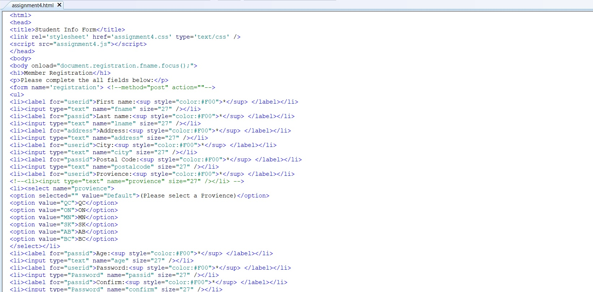
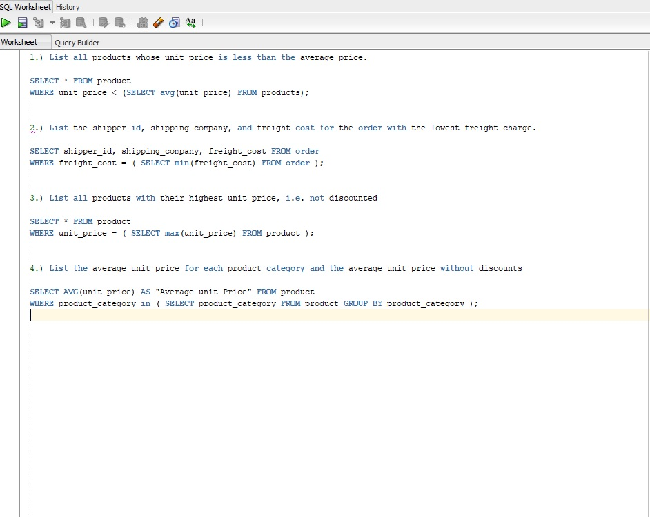

| Home | About me | Projects | Services | Contact Me |
|  |
Performance Monitoring Tool Performance improved in Linux kernel after implementing this in the kernel. Role: Design |
|  |
Sudo King Idea Implemeted Sudo in user level privilages. Role: Implentation |
 |
Awesome LapDe Designed, documented and implemented the tool that lets the OS wake up in case of any ptogramming bug and kills the program. Role: Design, Documentation, Implentation |